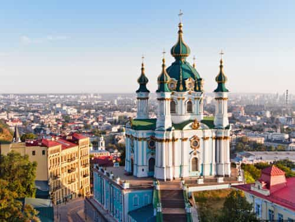
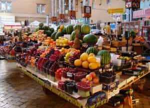
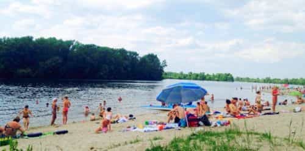

< < < Back
What It’s Like To Live In Kiev After Marrying A Ukrainian Woman – Return Of Kings
Suppose you are one of those adventurous Americans who meets and marries a beautiful foreign woman. You are the envy of all your friends. What next?
You can bring her back home to the United States or Europe. The guys will be jealous, the women will feel threatened. And your bride will be a fish out of water—for a while. But it doesn’t take them long to get established. She will find a group of her countrywomen, other Thais, Vietnamese or Ukrainians. They will teach her the ropes. Where to go shopping for the kind of groceries she needs. The most efficient way to send money to her relatives back home. Where her fellow countrymen hang out. And, oh yes! They will also learn American culture. Their friends will explain about American men and American divorce law. And that is where the trouble starts.
My Vietnamese war bride, an upscale Frenchified thing, informed me after just over a year of marriage, after I had helped her family escape Saigon, that “A woman needs a man like a fish needs a bicycle.” When the inevitable the divorce came she refused a reasonable settlement offer and hired a junkyard dog lawyer to fight it in court. Losing, she was shocked to discover that that offer was off the table.
Keep your woman in her own country, where she is comfortable and where the culture is more likely to appreciate men. You make the adjustment to her culture instead of vice versa. Why? American culture is about the most poisonous in the world. Almost anything is better. Countries that haven’t been indoctrinated in feminism and cultural Marxism still value children and respect a woman’s role in bearing them and raising them. They also respect a man’s role as the breadwinner and head of the family.
I committed myself to Ukraine nine years ago, met my wife seven years ago and our son appeared five years ago. It is worth enumerating the many ways in which it is a pleasure to be living with her and raising him in Kyiv instead of the USA.
1. Kyiv is a beautiful and lively city

Beautiful architecture – Andreevska Church
Kyiv is a worthy capital city. It has millennium-long history studded with cathedrals and other exquisitely crafted monuments. There are many, many targets for a tourist camera. The walled city was built to be defensible, situated atop a steep bluff on the right bank of the Dnieper River close to where the Desno River joins from the east, 20 miles south of where another major tributary, the Pripyat, flows in from the west. From their capital in Kyiv the Viking princes could easily sally out in their long boats to the Black Sea or anywhere in Western Russia.
The sandy river beaches are good for swimming from June to September and for fishing any time it isn’t frozen. One can rent kayaks and rowboats or take a river cruise in the warmer months. When it does freeze it is dotted with ice fishermen. All it takes is a saw, some bait, a line and the anti-freeze of one’s choice. There are bicycle paths along the river and on the islands in the middle of the river. The city is experiencing a surge in the number of bicycle commuters.
The Soviet system had its good points. They housed everybody in high-rise apartments. It may not be as attractive as detached houses, but it makes for a very compact city. Those people needed places to breathe and exercise, so the city is full of parks. As compact as Kyiv is, it is, with most people living in apartment blocks, it easy to get around. Every place in the city is within walking distance of a convenience store of some sort, and restaurants and shopping centers are usually within a walk or a short bus ride.
Young people the world over want to live in the city, and Kyiv is no exception. It has lots of bars, cafés and nightclubs. The trends are toward sushi and Italian food. Ukraine is traditional enough that young people even go to church. There are Orthodox churches in every neighborhood, and a handful of English-speaking congregations scattered throughout the city.
Kyiv is home to Ukraine’s most famous universities, Shevchenko University, Kyiv-Mohyla Academy and Kyiv Polytechnic Institute. These are their Harvard, Yale and MIT — an extraordinarily high percentage of business and government leaders have graduated from them. They know each other. As in the United States, just being admitted to these universities is a sign of intelligence and talent. For a foreigner, getting to know these elites is a lot easier than getting to know Ivy Leaguers in the United States.
2. Ukraine is extremely affordable

Attractive, inexpensive traditional markets (and supermarkets, of course!)
Kyiv is a very inexpensive place to live… very bottom of the Big Mac Index. The hryvnya exchange rate has fallen threefold since the start of the war in Donbass. Prices have risen, especially for imports, but not nearly as much. The tourist will note that it is still possible to get a decent hotel room for $30, a taxi anywhere in the city for $10 and a meal for under $10. That is just the start.
For those of us who live here, 16¢ Metro rides—buses and trams are even less—make life cheap and convenient. Try the grocery store—10¢ a pound for potatoes, beets, carrots, onions and cabbage, the staples of the Ukrainian diet. Meat is generally under two dollars a pound. Although there is a lot of hue and cry about corruption in the energy business, in the end it costs far less than in the United States: $100 a month to heat a house and between four and five dollars a gallon for gasoline. However, most Ukrainians’ utilities are included in rent, and only a few drive cars.
Medical care is a preview of the impending Obamacare disaster. The state promises the moon but delivers only what it can afford. The average Ukrainian has to stand in a long line to get indifferent service from underequipped and underpaid doctors in shabby, Soviet era hospitals. The flip side is that fee-for-service is alive and well. You can get decent care if you pay for it… and it doesn’t cost very much. In fact, Ukraine is a medical tourism destination, especially for fertility treatments, plastic surgery and dental work.
An American Social Security check makes you rich by local standards. It is a good place to live in retirement. Moreover, any American can teach English, and there are a number of entrepreneurial opportunities that don’t take a lot of capital to start.
3. Ukrainians are fairly uniformly Slavic – and they like people like themselves
Western newspapers are full of horror stories about Ukraine — war and corruption. Leaders in Moscow, Washington and Europe love to point fingers at us to distract from the increasingly blatant corruption surrounding those in the West. I’m no fan of corruption, but given the fact that it is universal, it is worth relating why Ukrainian corruption is more comfortable to live with than that of the Europe or the United States.
There is no hypocrisy about our corruption. Or, rather, the hypocrisy is so transparent that nobody believes the lies. The virtue? We still have free speech. Ukrainians do not lose their jobs if they are politically incorrect. They are not jailed if they say what they think about Middle Eastern immigration. If you tell a woman she looks good, she might actually blush and appreciate it.
The corruption has kept the standard of living low, which, perversely, has important benefits. People remain traditional because they have needed the support of families just to survive. “Asylum seeking” immigrants don’t come because there is nothing here for them—few jobs and nothing in the way of welfare.
Not having immigrants leads to high levels of social capital. The people actually like and trust each other. I am the only American in our little development of 3000 homes. They have included me in the group—everybody knows me and says hello when I meet them on the street, in the bus and in the stores. In my toney neighborhood of Bethesda, Maryland, most neighbors were too occupied with their important jobs to bother being neighborly.
The fact that it is mostly just Slavs has a couple of important corollaries. There are no bad neighborhoods in Kyiv. People will tell you to avoid the Troyeshchena, but a lot of people I know live there. I went to see for myself. I had a couple of pleasant shots of vodka chatting with the locals. I cannot imagine doing that in the Anacostia neighborhood of Washington DC.
People always stand up to give my son and me a seat on the bus or Metro. Old ladies absolutely gush over him, and engage him in small talk. They support their rising generation, and are tickled to death that I am raising him to be a Ukrainian.
Lastly, even though the locals will tell you otherwise, Ukrainians are good and polite drivers. They invariably stop for you at crosswalks. Very few will drive after even one drink. Fatalities per vehicle mile are about twice as high as in the West because the roads are poor, but you can’t blame it on the drivers.
4. Young people have pride in themselves
An English language Toastmasters meeting
Students and young professionals show self-restraint: no tattoos, no piercings, no sloppy clothes, no swearing, very little smoking and no drugs. They are what in the 1950s was called square—delightfully so. They look forward to marriage and families, especially the women. For this reason they are perhaps not as easy as girls elsewhere, but when you get one, you have something of substance.
There are lots of places to meet young people. Needless to say, bars and nightclubs. There are studios all over town giving inexpensive dance lessons—salsa and swing are big—and hundreds of sports clubs. The English language Mafia club is thriving. The Toastmasters public speaking club attracts many of the best and brightest with meetings in English, German, Russian and Ukrainian. The Language Exchange club also meets in several languages. From May to September, the river beaches are great, surrounded by restaurants, bars and discos.
Ukrainians love to practice their English and welcome foreigners. Not too many make it this far east. It is an easy place to make friends.
5. It is a good place to sit out the West’s coming civil unrest

One of Kyiv’s many lovely river beaches
The Western press would have you believe that Kyiv is a lawless Wild West. That is the opposite from the truth — even today it is safer than any Western capital city.
The first danger cited is Vladimir Putin. When are the Russians going to invade? Answer: they won’t. Throughout is history Russia has expanded by stealth and opportunity. They stopped when Finland fought back in 1939 and Georgia fought back in 2008. They swiped the Baltics and part of Poland only after Germany had started a war that diverted the world’s attention. They imposed their will on their European satellites only because the Red Army conveniently occupied them at the end of World War II.
In Ukraine, they took the opportunity of political chaos in 2014 to steal Crimea, where by treaty they already had a large military presence. Emboldened, they thought they had an opportunity in the Russian-speaking Donbass. But the Ukrainians resisted, and that war is at a standstill. Putin knows full well that 80 million ethnic Russians cannot dominate 40 million ethnic Ukrainians, especially under the glare of world opinion. Despite what the neocons may have shouted to sway the US election, the Russians are not coming. Another comforting thought is that there is nothing here worth nuking. It is a benefit of staying out of NATO.
There is no dependent class here to rise up when economic hardship hits. Hardship is already here. There are no discontented minorities. Gypsies, the most visible of them, actually work—they sell flowers and work as junk dealers. You cannot be a parasite if there is no blood to suck. It is the United States and Europe that have legions of restless unemployed who are only being pacified by government benefits. and will rise up when governments can no longer afford them.
Ukraine’s corruption is well understood by everybody. As much as they complain, people know how to cope with it. It may take bribery to get things done, but they generally do get done. Corruption does not result in much violence. Occasionally some hard-nosed judge or a pesky reporter gets bumped off, true, but in every case the victim could have explained quite clearly why he was targeted. It is not like the random killing of whites by blacks in the United States or random Islamic terror in Western Europe.
Ukraine has lots of land, excellent agriculture, abundant water, reasonably good natural resources, and a homogeneous and hard-working population. It is not as dependent on international trade as most European countries. When the world financial system collapses, Ukraine will come through looking pretty good. They are so far down that it all looks like up, and the stress lines for civil unrest simply don’t exist. Though you may come here for the love of a wonderful woman, you will find it a delightful place to make your home.
Read More: Ukrainian Girls Have Lost Their Love For American Men